안녕하세요 nov입니다. 저는 목표를 1달 그리고 작게는 1주일 간격으로 설정합니다.
To-Do-List 를 작성하여 하루 하루 체크해 나가는 것은 목표 달성에 있어서 매우 큰 부분을 차지합니다.
이번 포스팅에서는 Notion을 활용해 To-Do-List를 만드는 방법에 대해 간략하게 정리해 보고자 합니다.
이번 포스팅을 끝 까지 따라오시면 다음과 같은 To-Do-List를 만들 수 있습니다.
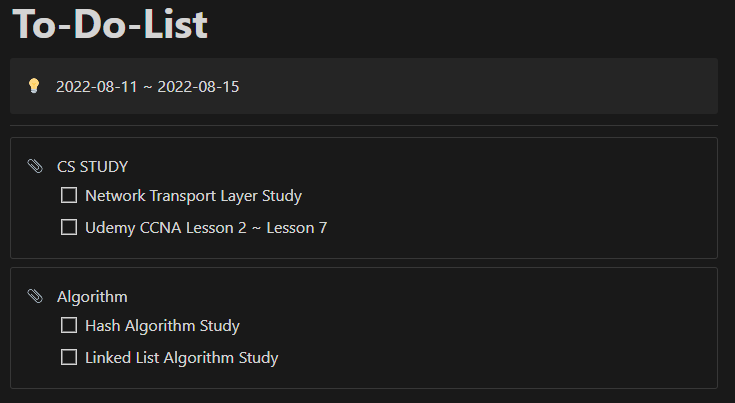
[목차]
#1 Call-Out - 돋보이는 글 작성하기
#2 Call-Out - 섹션 나누기
#3 To-Do-List 작성하기
#1 Call-Out - 돋보이는 글 작성하기
우선 콜아웃(Call-Out) 블록을 하나 생성해 제목 부분을 꾸며 보도록 하겠습니다.
블록을 클릭 → 메뉴 → 전환 → 콜아웃 순서로 클릭해서 콜 아웃을 생성합니다.
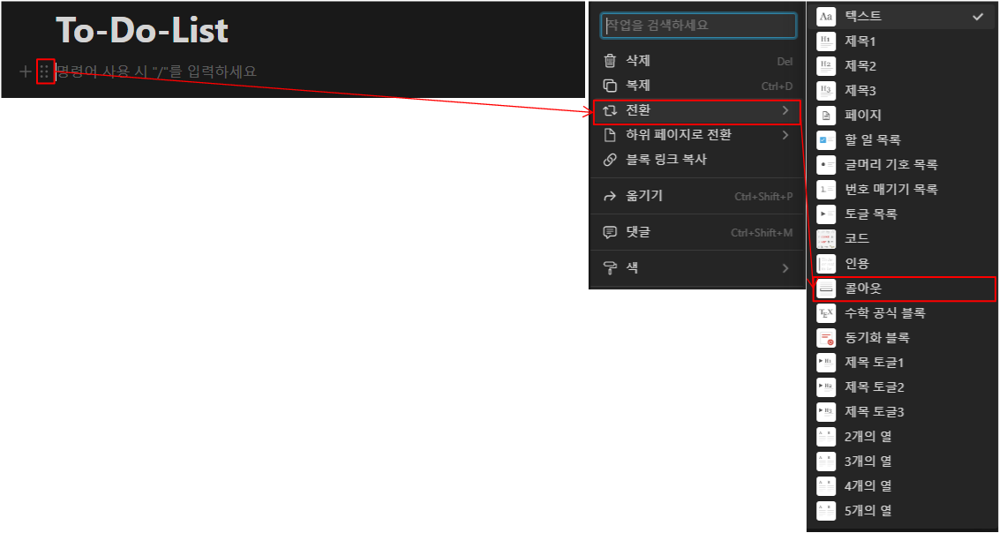
혹은 /callout 을 입력해 바로 콜 아웃을 생성 할 수도 있습니다.
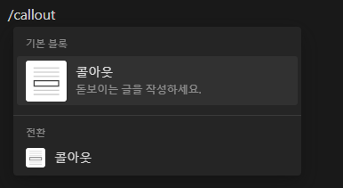
콜 아웃 블록이 하나 생성되었습니다. 옆에 아이콘을 클릭해 원하는 아이콘으로 변경할 수 있습니다.
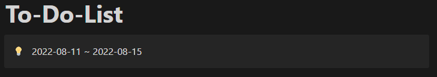
#2 Call-Out 섹션 나누기
이번에는 콜아웃 블록을 하나 더 생성해 섹션을 나누는 용도로 커스텀해 보도록 하겠습니다.
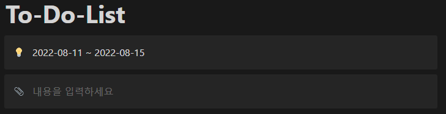
방금 생성한 콜아웃 블록을 클릭한 뒤, 색 → 배경 → 기본 배경 순서로 클릭해 줍니다.
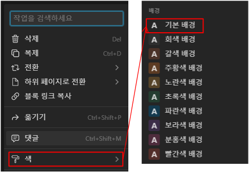
그러면 다음과 같이 콜아웃 블록의 배경색이 투명하게 바뀝니다.
이제 여기에 To-Do-List 체크 박스 목록을 넣을 것 입니다.
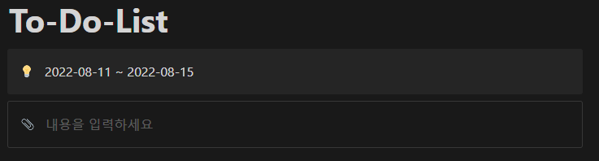
#3 To-Do-List 작성하기
블록을 하나 생성한 뒤 전환 → 할 일 목록 순서로 클릭합니다.
혹은 /todo 명령어를 입력해 바로 생성하는 것 또한 가능합니다.
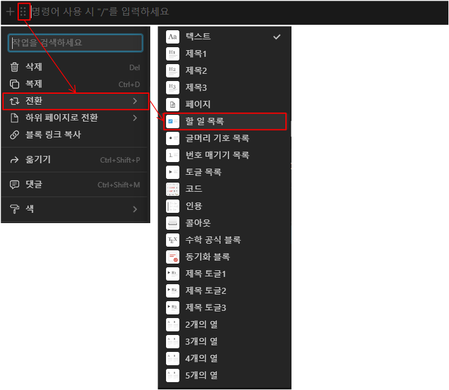 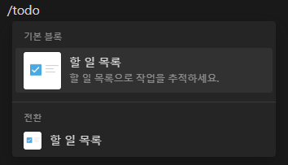
할 일 목록 체크박스가 생성되면 원하는 내용을 입력한 뒤, 앞서 제작한 콜 아웃 블록으로 드래그하여 드랍 합니다.
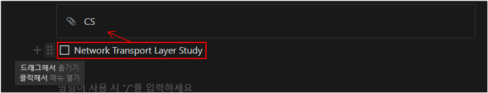
원하는 만큼 섹션과 체크박스를 생성합니다.
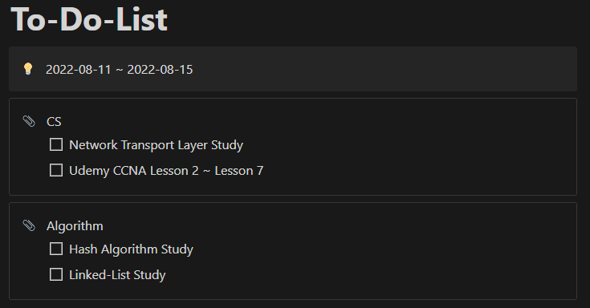
기호에 따라 콜아웃 블록을 양옆으로 배치하는 것 또한 가능합니다.
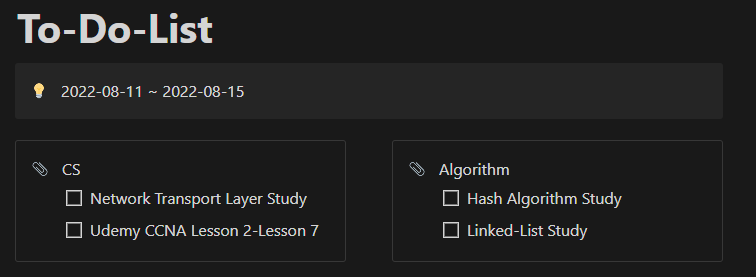
할 일을 끝냈다면 체크박스를 클릭해 완료 표시를 남깁니다.
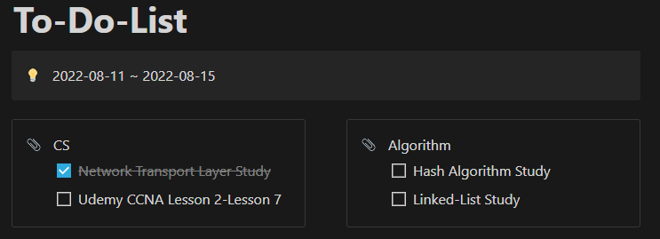
노션을 활용해 To-Do-List를 만드는 방법에 대해 간략하게 알아 보았습니다.
앞으로 Tool - Notion 카테코리에 노션에 대한 사용법에 대하여 정리해 나가고자 합니다.
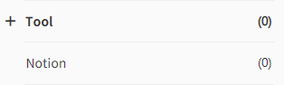
도움이 되셨다면 하단의 공감 부탁드립니다!